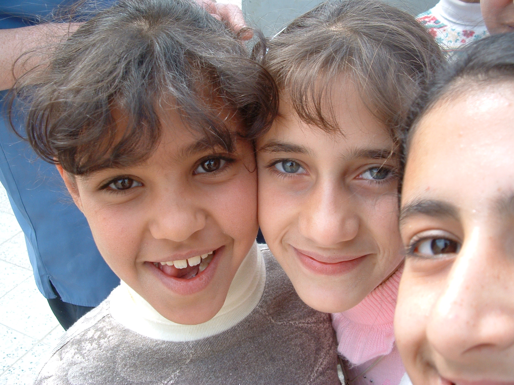

Manual dos Novatos
A Wikipédia
« A enciclopédia livre, também para os leigos. »
Dedico este trabalho à minha mãe Sil e à minha vó Rachel
Índice
Sobre o Manual
A idéia é ser um Manual útil a todos aqueles que já ouviram falar mas não sabem ainda muito bem ou não fazem idéia do que seja "Wikipédia" e como é possível contribuir neste projeto. A linguagem é propositalmente pessoal e descontraída para que esse aprendizado seja o mais agradável possível.
Este Manual contém tudo que você precisa saber para iniciar na Wikipédia e além disso se aprofunda em diversos assuntos para aqueles que querem mergulhar no mundo wiki.
O conteúdo deste Manual está licenciado sob a GFDL, isso significa na prática que você pode copiá-lo a vontade para qualquer um, mas sempre mantendo o aviso de direitos autorais localizado depois desta página.
Nota: este Manual não faz parte das documentações oficiais da Wikipédia lusófona. A ajuda principal da Wikipédia pode ser encontrada em: Ajuda:Página principal. Este Manual é apenas uma alternativa para os que buscam um documento menos impessoal.
Sobre o autor original
Prazer, sou brasileiro de Campinas, cidade paulista. Acredito muito que esta enciclopédia só será melhor com a sua participação, por isso investi um pouco do meu tempo elaborando este Manual.
Para maiores informações sobre mim e sobre meu trabalho na Wikipédia veja minha página de usuário: Usuário:FML.
Caso tenha sentido que o Manual esteja confuso em alguma parte, não hesite em me informar. Para entrar em contato comigo mande um e-mail para micaroni@gmail.com.
Outras considerações
Esta é uma versão HTML "Transparente" deste Manual. Se você deseja imprimir, busque pela versão para impressão (geralmente PDF) ou se deseja navegar pelo Manual procure a versão em HTML sofisticado.
Lembre-se que, por este Manual ser GFDL, pode ser que ele tenha sido modificado por outros; portanto, veja a seção "Histórico" para identificar os demais autores (se houver).
Histórico
Versão: ramo principal, alpha 1.0 HTML Transparente.
- FML, última atualização: 5/jun/2006
- FML, criação do rascunho: 30/abr/2006
Introdução
Meu principal objetivo é que você ultrapasse a barreira do "curioso" para o "útil" da forma mais proveitosa possível. Sua participação na Wikipédia é muito valiosa para toda a humanidade! Este Manual pretende te explicar o motivo disso além de te ensinar como nos ajudar.
Se você já está lendo isto, já passou no mínimo de "curioso" para "novato". Sinta-se bem vindo, novato! Talvez você esteja se perguntando: "Por que bem vindo? Onde estou entrando?" Se você se perguntou isso, talvez esteja até com medo de onde possa estar se metendo! Calma, posso te garantir por enquanto que você pode estar entrando num ambiente que tem potencial para ser a sua "segunda casa". Tanto assim? Olha, espero conseguir explicar o tamanho do gosto que eu e mais centenas de voluntários sentem por este projeto. E também espero que este Manual não seja tão formal ou "tão chato" na linguagem mais direta como a documentação padrão que talvez você tenha se deparado por aí.
Conceitos básicos
Explicarei alguns conceitos básicos respondendo algumas perguntas que já me fizeram na vida real, como num diálogo. É muito importante que entenda esses conceitos antes de prosseguir.
(*) Nota: se não tiver muito tempo, dê preferência ao que está destacado com asterisco.
« Você já ouviu falar do Viquipédia (sic)? »

|
|
® Logomarca da Wikipédia em língua portuguesa.
|
Wikipédia lê-se "u-í-qui-pé-dia". É um substantivo feminino, portanto "a Wikipédia".
Alguns confundem com "o Wikipédia" porque imaginam "o [site] Wikipédia". Mas, na verdade, Wikipédia é bem mais que "um site", ela é "uma enciclopédia". Portanto, "a [enciclopédia] Wikipédia". Alguns também acham que "Wikipédia" não tem acento porque confundem com a palavra em inglês "Wikipedia". o termo vem da junção de wiki (do havaiano wiki-wiki, significando rápido) + pédia, fazendo então um trocadilho com a palavra enciclopédia. Usa-se a inicial em maiúscula porque "Wikipédia" é um nome próprio, marca registrada da Fundação Wikimedia.
« (*) E o que é então a Wikipédia? »
É basicamente uma enciclopédia. Uma enciclopédia moderna de conteúdo dinâmico e de acesso livre. As vezes pode ser chamada também de "projeto" porque ela está sempre em construção.
« Pensei que fosse um site. »
O "site" da Wikipédia é apenas uma parte técnica desta enciclopédia. Pense nela como um grande livro, armazenado em algum lugar. Na verdade, ela está armazenada num Banco de Dados disponível na rede mundial de computadores. A versão dessa enciclopédia em língua portuguesa tem mais de 130.000 artigos, o que impressa seria aproximadamente um livro de 70 cm de altura. A versão em língua inglesa, a maior do mundo, tem mais de 1.100.000 artigos, o que daria um livro de aproximadamente 7 metros e 70 cm de altura, ou ~ um prédio de dois andares.
« Mas e o site? Pra que serve? »
A internet é o meio tecnológico de comunicação que mais se adequou aos propósitos da Wikipédia. Ela está disponível na internet basicamente pelos motivos abaixo:
- Disponibilizar na internet é relativamente barato, comparando com uma possível distribuição impressa ou em CDs ou DVDs.
- A internet hoje é um meio de fácil acesso, podendo ser encontrada em LAN Houses, shoppings, numa biblioteca pública, no McDonalds, nos Correios, no Poupa-Tempo etc. Muitas escolas e universidades possuem acesso à internet. Com um simples computador e uma linha telefônica também é possível acessar a internet. A inclusão digital é uma meta de muitos governos.
- Manter um "site" dinâmico satisfaz também o conceito da Wikipédia de "ser editável por qualquer um". Esse conceito será melhor explicado a seguir.
« E o site é mantido por quem? Quem banca? »

|
|
® Logomarca da Fundação Wikimedia.
|
O site é mantido por uma fundação não-governamental e sem fins lucrativos chamada Fundação Wikimedia. O criador da idéia da Wikipédia e o dono da fundação se chama Jimmy Donal Wales. A fundação também mantém outros projetos no "estilo wiki" que serão melhor explicados a seguir.
« Como a fundação sobrevive? »
Basicamente por doações voluntárias. O próprio Wales é um dos maiores doadores da fundação.
« É em língua portuguesa? »
A Fundação Wikimedia mantém centenas de projetos no "estilo wiki". A Wikipédia é apenas um deles. E mais: a Wikipédia em língua portuguesa é apenas um projeto dos mais de 220 em quase todas as línguas do mundo, inclusive em línguas "artificiais" como o esperanto.
Atualmente (mai/2006) a versão em língua portuguesa ocupa a 9
a posição em número de artigos. As 15 maiores Wikipédias do mundo são, em ordem: em inglês, alemão, francês, polaco, japonês, holandês, sueco, italiano, português, espanhol, russo, chinês, finlandês, norueguês e esperanto.
Apesar deste Manual eventualmente ser muito útil para muitos projetos "estilo wiki" e também para Wikipédia em qualquer língua, as explicações concentram-se na Wikipédia em língua portuguesa, também chamada de Wikipédia lusófona.
« (*) Quem escreve o conteúdo? Ela é associada a alguma outra enciclopédia? »
O conteúdo é escrito por voluntários. Ela não é associada a nenhuma outra enciclopédia. Seu conteúdo é independente e não pertence à nenhuma instituição, nem mesmo à Fundação Wikimedia. O conteúdo é de todos. Todo mundo mesmo: eu, você, fulano, cicrano; é da humanidade. E quando um voluntário envia uma contribuição para a Wikipédia ele está concordando em licenciar o conteúdo pela GFDL, explicada melhor a seguir.
|
|
|
Símbolo mais conhecido do GNU.
|
« (*) É de todos mesmo? GFDL? Quê isso? »
Sim, é de todos mesmo! GFDL é um tipo de licença para documentos. A sigla significa em inglês "GNU Free Documentation License" ou "Licença de Documentação Livre GNU".
Essa licença garante que o documento e todo o conteúdo que dele for derivado também seja de todos, ou seja, continua sendo "da humanidade". Isso significa que qualquer um pode usar o conteúdo da Wikipédia para qualquer fim (exceto, é claro, para fins criminosos). E "qualquer fim" inclui também o direito de usar comercialmente o conteúdo, desde que mantendo a mais importante restrição da GFDL: que a informação continue sempre em GFDL.
« Pára! Você está dizendo que eu posso vender a Wikipédia ou parte dela? »
Pode sim. Mas sempre mantendo a GFDL em cada cópia vendida. Sendo assim, a partir do momento que alguém tiver uma cópia da informação em GFDL em mãos, ele poderá usá-la para qualquer fim, podendo revendê-la ou mesmo distribuir de graça se desejar.
« Então quando um voluntário contribui ele perde alguns direitos autorais? »
Sim, perde alguns direitos sim. Ele não poderá, por exemplo, exigir uma porcentagem do lucro caso o conteúdo seja vendido. Em troca, a informação se difunde e a humanidade ganha.
« (*) Mas e os créditos do autor? »
A licença GFDL respeita os créditos do autor. A Wikipédia pede em "Avisos Gerais" (localizado no rodapé do site) que, ao utilizar o conteúdo (ou difundi-lo), mantenha-se sempre uma referência ao endereço web original para o(s) artigo(s) usado(s) da Wikipédia. A partir do endereço web é possível identificar os autores voluntários. Esse assunto é melhor explicado no capítulo Utilizando o conteúdo.
« Hmmmm. Você falou mesmo em voluntários? As pessoas que contribuem não ganham nada? »
Os voluntários não ganham nada para contribuir. Não existe nenhum editor pago pela Fundação Wikimedia, nem mesmo o próprio dono ou funcionários da fundação. Também não existe nenhum "editor-chefe" ou "coordenador de edição". O conteúdo é decidido pelos próprios voluntários e, caso haja conflito de idéias em edições, há mecanismos que serão explicados depois para a decisão final sobre o conteúdo de um artigo.
« (*) Como ser voluntário? Eu posso ser? »
Importante! A princípio, qualquer um pode ser voluntário. O conceito "wiki", ou seja, "rápido" é que o conteúdo pode ser "editável por todos". E, você pode ser um voluntário sim! Aliás, é para isso que está lendo este Manual, não? Esperamos que você seja muito útil à humanidade.
« (*) "Qualquer um" pode editar? Então o que garante que não estão inserindo informações incorretas? O conteúdo da Wikipédia tem qualidade? É confiável? »
Assim como na edição de qualquer enciclopédia, existem regras editoriais conhecidas na Wikipédia por políticas internas que ajudam na seleção do conteúdo, na forma com que um artigo deve ser escrito, os padrões a serem seguidos etc.
Lembre-se: na Wikipédia é muito fácil fazer, mas também é muito fácil desfazer e retornar ao conteúdo reconhecidamente mais estável.
Esse assunto é melhor desenvolvido no capítulo Confiabilidade e qualidade do conteúdo.
« E o que leva alguém a contribuir sem ganhar nada e além disso perder alguns direitos autorais básicos? »
É verdade que um voluntário precisa ter um certo "espírito voluntário". Os motivos são pessoais e diversos. Mas alguns conceitos da Wikipédia realmente despertam muito interesse em qualquer um. Posso listar alguns motivos abaixo:
|
|
|
Biblioteca de Alexandria.
|
- Compilação do conhecimento humano, para os cientistas. — Imagine a idéia de reunir num lugar só a compilação de todo o conhecimento humano! Para o desenvolvimento científico isso é grandioso não? Imagine agora esse conteúdo ser livre e livre para sempre (GFDL) e de todos. Para mim, esse é o maior interesse. – Hugo Lopes, um voluntário da Wikipédia disse: "A Wikipédia é uma Biblioteca de Alexandria do nosso tempo e todos podem abrir os seus livros." – e certamente muitos compartilham da mesma idéia que ele.
- Um mundo melhor, para os idealistas. — todos desejamos de modo geral um "mundo melhor", não? Não é discurso de Miss, todo mundo no fundo deseja isso mesmo. Essa foi a motivação do criador da idéia e da Fundação Wikimedia, o Jimmy Wales que deseja que a informação da Wikipédia chegue aos lugares mais pobres e menos desenvolvidos para que as pessoas possam construir um mundo melhor ao seu redor.
- Solidariedade, para os solidários. — Cada vez mais o mundo está consciente da importância da solidariedade com aqueles que não tiveram a mesma oportunidade que nós.
- Ser útil, para os sábios. — Todos sabemos coisas legais que talvez nunca poderemos usar na prática. É uma satisfação poder compartilhar o que conhecemos para que possa ser útil a alguém algum dia.
|

|
|
Acreditamos que o conhecimento humano deve ser acessível por todos.
|
- Fazer parte da história, para os orgulhosos. — Ninguém pode negar que é da natureza do ser humano ser (mesmo que um pouco) orgulhoso. Alguns consideram que a imortalidade nada mais é que fazer parte da história, e isso é extremamente gratificante. A compilação livre do conhecimento humano está sendo contruída, e você ficará de fora da construção? E se você puder contribuir com alguma peça fundamental, que será útil futuramente a milhares de pessoas? Isso é realmente gratificante!
- Aprendizado, para os interessados. — Muitos querem apenas estar submersos no mundo da informação. Contribuindo, aprendemos muito também! Ao inserir uma contribuição, as vezes nos motivamos a pesquisar o assunto, a ler sobre o tema, a compartilhar informação e trocar idéias com os outros voluntários etc.
- Diversão, para os criativos. — Este projeto estimula muito nossa criatividade pois somos desafiados a criar texto original, tirar fotos para ilustrações, desenhar diagramas, criar tabelas etc. A interatividade com a Comunidade também é divertida, nos bastidores há jogos de xadrez, bolões de futebol etc. além de encontros eventuais.
- Diversos outros motivos pessoais...
- Você pode encontrar mais motivos também em Wikipedia:Por que eu deveria contribuir para um Wiki?
|
|
|
Ajude a construir essa gigantesca fonte de informação livre!
|
« Estou empolgado! Quero começar logo! »
Que ótimo que está empolgado! Se chegou até aqui e realmente ficou empolgado, atingi meu primeiro objetivo: segurar você mais um pouco para terminar de ler este Manual e te explicar ainda muito mais coisas legais!
Se quiser, já está preparado para pular ao capítulo Sendo um voluntário. Mas, você pode ainda se aprofundar nos próximos capítulos: Utilizando o conteúdo e Confiabilidade e qualidade do conteúdo.
Utilizando o conteúdo
Você pode utilizar e/ou modificar livremente o conteúdo da Wikipédia desde que respeite a Licença de Documentação Livre GNU (ou GFDL).
É recomendável que se leia Wikipedia:Aviso Geral (também localizado no rodapé de todas as páginas da Wikipédia) antes de utilizar qualquer conteúdo. Os "avisos gerais" basicamente indicam que não há qualquer tipo de garantia sobre o conteúdo da Wikipédia.
Também é muito recomendável que se leia Wikipedia:Direitos de autor antes de utilizar e/ou modificar qualquer conteúdo, especialmente se o uso implicar em modificações ou distribuição em grande quantidade.
Basicamente, a obrigação de quem utilizar algum conteúdo da Wikipédia é a de sempre mantê-lo em GFDL e também de manter uma ligação para a fonte. Isso pode ser feito com uma ligação para « http://www.gnu.org/copyleft/fdl.html » e também um endereço para o artigo da Wikipédia de onde o conteúdo foi extraído.

Prefira utilizar o endereço do link de "Enlace permanente" localizado no menu "Ferramentas" da Wikipédia normalmente localizado no canto esquerdo da tela (ver figura). Isso garante que o leitor será encaminhado para uma "fotografia" fixa da página em que modificações posteriores serão desconsideradas.
Se a distribuição for em grande quantidade ou se o conteúdo ficar disponível a um público razoavelmente grande, ao invés do link para a GFDL prefira colocar isto em algum lugar de fácil acesso junto ao conteúdo utilizado:
e também dar crédito aos principais autores do artigo, pelo menos aos cinco principais, se houver mais de cinco. Para localizar os autores de um artigo é necessário analisar o histórico localizado numa aba sobre o artigo intitulada "História".
Se tiver alguma dificuldade em localizar os principais autores entre em contato com algum editor experiente através da página:
Wikipedia:Contato.
Se quiser, você pode também avisar os editores mais ativos do projeto onde o conteúdo será utilizado através da página Wikipedia:Contato.. Note que isso é opcional e serviria, além de uma referência interna, para que pudéssemos fiscalizar e garantir que o conteúdo difundido continue sempre em GFDL e ninguém desrespeite os termos dessa licença.
Confiabilidade e qualidade do conteúdo
Assim como na edição de qualquer enciclopédia, existem regras editoriais conhecidas na Wikipédia por políticas internas que ajudam na seleção do conteúdo, na forma com que um artigo deve ser escrito, os padrões a serem seguidos etc. As políticas internas são um grupo de documentos que compilam as decisões da comunidade colaborativa durante toda sua história. A partir de alguns princípios básicos da Wikipédia, os próprios voluntários criam, desenvolvem e refinam políticas editoriais.
Um dos pilares das regras é o Princípio da Imparcialidade (também chamado de NPOV). Esse princípio prega que o conteúdo de um artigo deve se ater aos fatos e deve ser do ponto-de-vista mais neutro possível, entre outras recomendações como: nos casos da impossibilidade ou dificuldade em manter um ponto-de-vista totalmente neutro, como no caso de artigos polêmicos (religião, política, futebol etc.) deve-se abranger todos os pontos-de-vistas conhecidos e explicitar isso no artigo.
Para ser um voluntário é bom saber da existência dessas regras (das políticas internas) e melhor ainda entendê-las. No começo é normal errar bastante, e essas regras podem ser aprendidas aos poucos, com o tempo e a ajuda de outros voluntários. É necessário um pouco de paciência no início, não se preocupe em cometer algumas falhas editoriais no aprendizado.
Devido à sua forma dinâmica, a Wikipédia mantém um histórico de toda colaboração, inclusive de anônimos. Assim, é possível visualizar cada mínima mudança que acontece na Wikipédia e também é muito fácil desfazer qualquer alteração. A forma como trabalhar com o histórico será melhor explicada neste Manual. Sendo assim, é possível que algumas contribuições suas "sumam" ou sejam desfeitas porque conflitam com alguma política interna de edição. Mas, lembre-se: não há fiscalização automática e a fiscalização do conteúdo também é feita por voluntários; geralmente por voluntários mais experientes. Portanto, é possível que algum conteúdo mal colocado não seja corrigido ou mesmo seja desfeito de forma equivocada. Mas, com o tempo isso certamente será corrigido.
Isso faz com que a Wikipédia, por natureza, não consiga garantir 100% a validade de seus conteúdos e isso é claramente informado nos Avisos Gerais, localizado no rodapé do site. Mas não desanime! Há bons argumentos para que isso não seja um problema:
- Nenhuma enciclopédia no mundo é 100% confiável. Todas são feitas por seres-humanos e portanto possuem erros, principalmente em assuntos mais subjetivos. Por causa disso, é muito importante que mais de uma fonte seja consultada em uma pesquisa.
- A Wikipédia muda rapidamente e ela tem potencial real para ser a mais confiável e completa do mundo. Sua história tem nos mostrado que a tendência é sempre melhorar. Isso acontece basicamente por dois motivos:
- A idéia de um trabalho livre e voluntário atrai pessoas boas, que realmente acreditam nisso e querem que o projeto melhore sempre.
- É muito fácil desfazer as alterações. Portanto, se algum curioso modifica o conteúdo para testar ou um mal-intencionado vandaliza, por exemplo, o conteúdo é desfeito logo em seguida por algum voluntário que está vigiando o conteúdo. Neste Manual também será ensinado como vigiar um conteúdo.